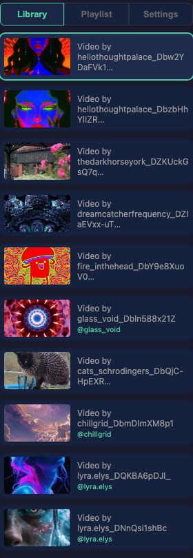
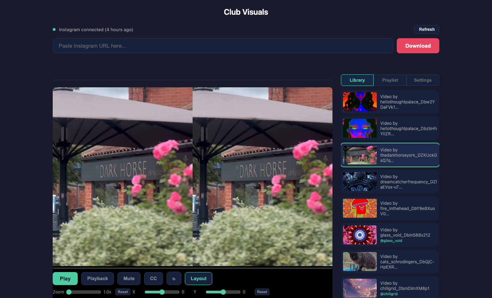
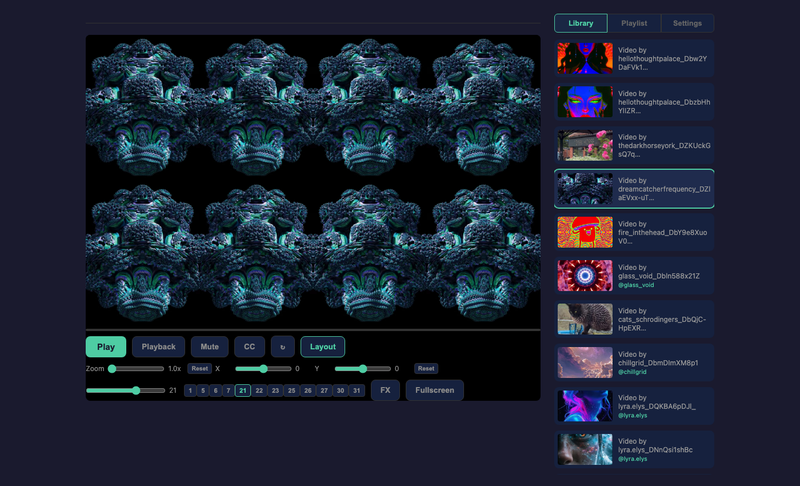
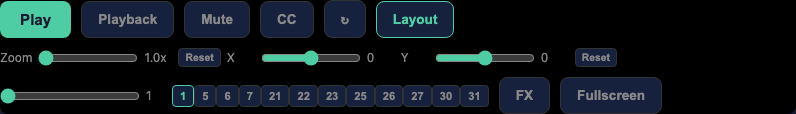

Playback & Views
The player section is the core of Club Visuals. Load a video from the library, choose a view mode and mirror preset, and control playback with the controls bar.
Video library
The right sidebar shows the Library tab by default. Every downloaded video appears as a thumbnail with its filename and Instagram channel name (prefixed with @).

03-library-grid.png).- Click a video to load and play it
- The currently playing video is highlighted with a green border
- Hover over a video to reveal the delete button (red "x" in the corner)
- Deleting removes the video, its metadata file, and its cached thumbnail
View modes
Click the Layout button in the controls bar to choose from five view modes:
| Mode | Layout | Description |
|---|---|---|
| Single | 1 tile | Full-width video with object-fit: contain. No mirror presets. |
| Dual | 2 tiles side by side | 50% width each, cropped to fill. 8 mirror presets. |
| 3x | 3 tiles side by side | 33% width each, cropped to fill. 8 mirror presets. |
| 4x | 2×2 grid | Four tiles in a square grid. 16 mirror presets. |
| 8x | 4×2 grid | Eight tiles in a wide grid. 12 mirror presets, plus the full 32 via slider. |

05-view-dual.png).
06-view-octo.png).Mirror presets
When in any multi-tile view mode, the controls bar shows numbered preset buttons. Each preset defines a unique combination of horizontal and vertical flips across all tiles, creating mirror and kaleidoscope effects.
The number of presets depends on the view mode — curated subsets of the 32 possible configurations are shown as quick-access buttons. In 8x mode, a slider gives access to all 32 configurations.
All tiles share a single decoded video stream via captureStream(), so there is no performance penalty for more tiles.
Zoom and pan
In multi-tile modes, zoom and pan controls appear in the controls bar:
- Zoom slider (1.0x – 4.0x) — enlarges the video within each tile, cropping edges for a tighter frame
- Pan X and Y sliders (-1.0 to 1.0) — shift the visible portion of the video horizontally and vertically
- Reset buttons — return zoom to 1.0x or pan to centre
Zoom and pan are applied uniformly to all tiles. Combined with mirror presets, zooming into a detail can create striking kaleidoscope patterns from source material that was not designed for it.
Controls bar

07-controls-bar.png).From left to right, the controls bar contains:
- Play / Pause — green button, toggles playback
- Playback — popup menu with three modes:
- No Loop — video plays once and stops
- Loop — seamless looping with an invisible reset near the end
- Bounce — plays forward, then reverses frame-by-frame, then loops
- Mute — toggle audio on/off
- CC — toggle the caption overlay that shows the
@channelattribution for 10 seconds on video load - Refresh (↻) — rebuild tile clones while preserving playback position
- Layout — popup menu for view mode selection
- Zoom / Pan sliders — shown in multi-tile modes
- Mirror presets — shown in multi-tile modes
- FX — opens the FX Controller popup window
- Fullscreen — fills the entire screen
Playback modes
No Loop
The video plays from start to end and stops. The Play button resets to "Play" so you can restart manually.
Loop
The video loops seamlessly. The reset happens within 0.15 seconds of the end, making the loop point nearly invisible. This is the mode to use during DJ sets for continuous visuals.
Bounce
The video plays forward while capturing frames. When it reaches the end, it pauses the video and plays the captured frames in reverse, creating a smooth ping-pong effect. After the reverse pass completes, it starts a new forward pass. Bounce mode works with all view modes and mirror presets.
Fullscreen
Click Fullscreen (or the button turns red and says "Exit Fullscreen" when active). In fullscreen mode:
- The video fills the entire screen edge-to-edge with no gaps
- Controls auto-hide after 1.5 seconds of no mouse movement
- The cursor disappears when controls are hidden
- Move the mouse or click anywhere to show controls again
- The progress bar is hidden — seek using the playlist controls or keyboard
- The playlist indicator bar (if active) appears at the top and also auto-hides
Caption overlay
When you load a video that has channel metadata, the @channel name appears briefly in the bottom-left corner. The CC button in the controls bar toggles this feature on or off.
Progress bar
Below the video, a thin green progress bar shows playback position. Click anywhere on it to seek to that position. The progress bar is hidden in fullscreen mode.